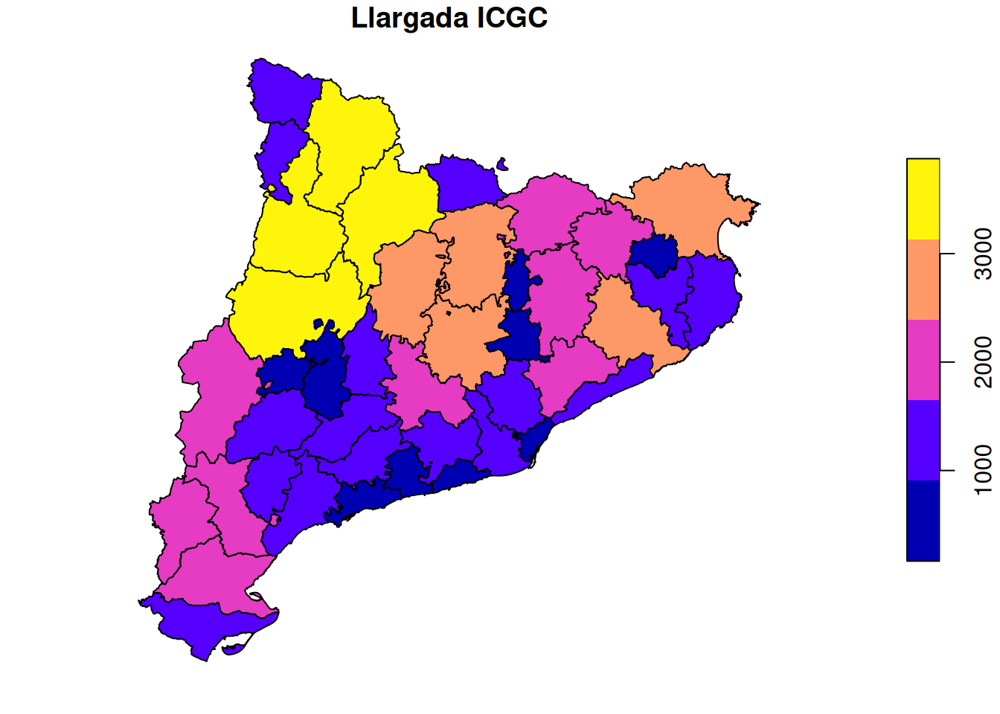
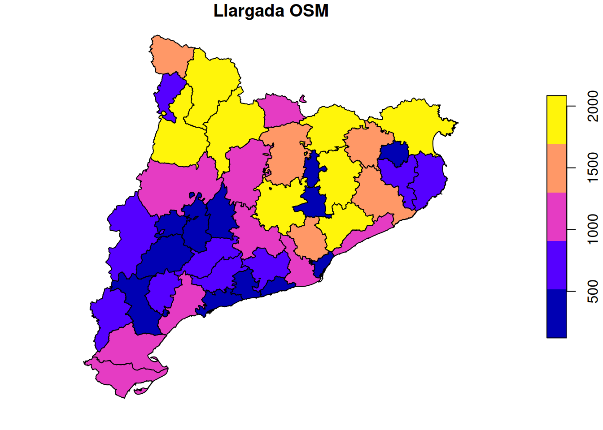
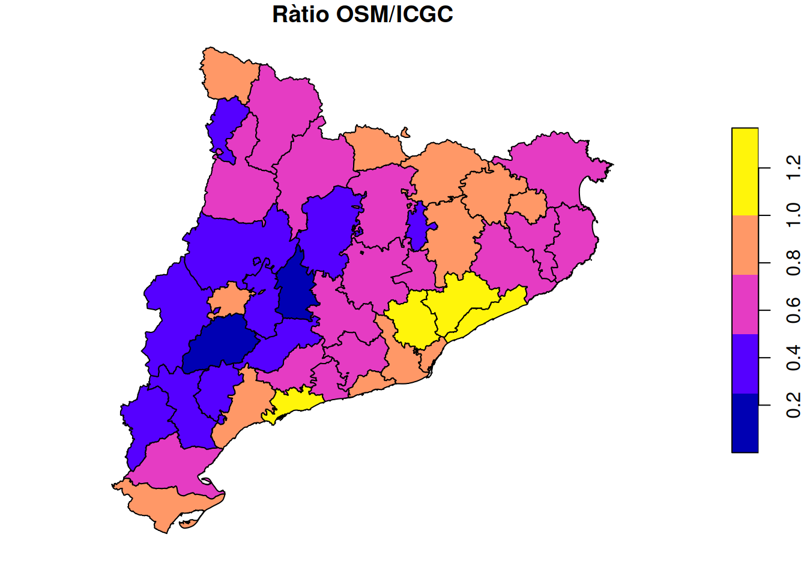

| comarca | length_osm | length_icgc | ratio |
|---|---|---|---|
| Alt Camp | 572,0 | 1.142,06 | 50,09% |
| Alt Empordà | 1.901,3 | 2.640,15 | 72,01% |
| Alt Penedès | 796,4 | 1.369,05 | 58,17% |
| Alt Urgell | 1.960,7 | 3.875,76 | 50,59% |
| Alta Ribagorça | 594,8 | 1.323,30 | 44,95% |
| Anoia | 1.031,3 | 2.075,36 | 49,69% |
| Bages | 1.778,0 | 2.693,75 | 66,00% |
| Baix Camp | 1.327,6 | 1.647,60 | 80,58% |
| Baix Ebre | 1.305,3 | 2.261,28 | 57,72% |
| Baix Empordà | 790,3 | 1.141,72 | 69,22% |
| Baix Llobregat | 977,4 | 1.013,61 | 96,43% |
| Baix Penedès | 360,1 | 690,56 | 52,14% |
| Barcelonès | 223,9 | 273,08 | 81,99% |
| Berguedà | 1.466,4 | 2.877,05 | 50,97% |
| Cerdanya | 932,1 | 1.192,22 | 78,18% |
| Conca de Barberà | 660,9 | 1.437,71 | 45,97% |
| Garraf | 338,5 | 451,17 | 75,02% |
| Garrigues | 235,1 | 1.332,94 | 17,64% |
| Garrotxa | 1.560,2 | 1.899,53 | 82,13% |
| Gironès | 761,0 | 1.150,84 | 66,12% |
| Lluçanès | 216,0 | 571,35 | 37,81% |
| Maresme | 1.254,7 | 916,68 | 136,88% |
| Moianès | 425,4 | 821,29 | 51,79% |
| Montsià | 1.013,0 | 1.110,86 | 91,19% |
| Noguera | 1.188,1 | 3.271,01 | 36,32% |
| Osona | 2.089,4 | 2.228,27 | 93,77% |
| Pallars Jussà | 1.732,0 | 3.477,89 | 49,80% |
| Pallars Sobirà | 2.049,0 | 3.450,59 | 59,38% |
| Pla d'Urgell | 157,8 | 164,75 | 95,77% |
| Pla de l'Estany | 459,1 | 570,34 | 80,50% |
| Priorat | 645,5 | 1.339,08 | 48,20% |
| Ribera d'Ebre | 665,6 | 2.180,47 | 30,52% |
| Ripollès | 1.756,3 | 2.221,60 | 79,06% |
| Segarra | 122,9 | 1.003,11 | 12,25% |
| Segrià | 815,2 | 1.712,23 | 47,61% |
| Selva | 1.650,6 | 2.510,41 | 65,75% |
| Solsonès | 1.068,9 | 2.670,21 | 40,03% |
| Tarragonès | 493,8 | 485,16 | 101,77% |
| Terra Alta | 577,9 | 1.844,55 | 31,33% |
| Urgell | 322,6 | 699,34 | 46,13% |
| Val d'Aran | 1.580,2 | 1.586,99 | 99,57% |
| Vallès Occidental | 1.366,7 | 1.312,19 | 104,15% |
| Vallès Oriental | 1.940,0 | 1.664,54 | 116,55% |
Camins d’Aigua
Seguiment introducció de dades de rieres, rierols i recs a OSM Catalunya
Seguiment per comarques
Longitud cursos d’aigua ICGC: 70.302 km
Longitud cursos d’aigua OSM: 43.164 km
Percentatge de cursos d’aigua a OSM: 61.40%
Mapes


